AMD Instinct MI450 GPU 上的 LDS 优化深度解析
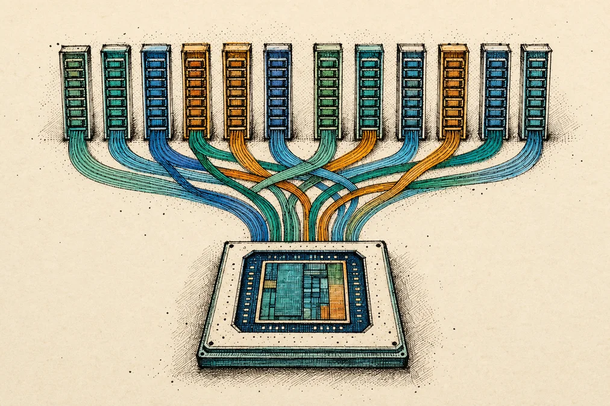
前两位作者（Plavsic、Zaghen）对本工作做出了同等贡献。
在 GEMM（通用矩阵乘法）kernel 中，操作数从全局内存经由 LDS（局部数据共享）进入寄存器，再由矩阵核心（matrix cores）消费。数据在 LDS 中的移动效率，常常是决定整体性能的首要因素。
LDS 的两个特性可能会在不知不觉中消耗掉相当大一部分可实现吞吐量。第一个出现在：内存中的 layout（布局）与矩阵核心进行 WMMA（Wave Matrix-Multiply-Accumulate，波前矩阵乘累加）所期望的布局不匹配时，例如当 B 操作数是 N 连续（N-contiguous）而核心需要 K 连续的布局时。在这种情况下，从 LDS 的普通加载无法向量化，而转置（transposed）LDS 加载则能在加载时实时重排数据，恢复向量化访问。第二个是对物理 LDS 分区（partitions）的争用，即 warp
[1] 经不同端口读取 LDS 的 warp 反复命中同一分区、令访问串行化。这篇博文聚焦 AMD Instinct™ MI450 GPU（gfx1250）上的这两个效应，以及如何规避它们。在本文中你将学到：
- 第一部分 —— 转置 LDS 加载：
ds_load_tr协作转置指令（cooperative-transpose）如何工作，以及如何使用它。 - 第二部分 —— 分区冲突：什么是分区冲突，如何组织 WMMA
ctaLayout和PartitionedSharedLayout以避免它，以及编译器的分区感知分配器（partition-aware allocator）如何在物理上把数据分离到不同的 LDS 分区。
这是一篇面向已经掌握编写 GEMM kernel 基础的 Gluon 与 Triton kernel 作者的深度技术文章。如果你是 Gluon kernel 新手，请从以下开始
From Naive to Near-Peak: Building High-Performance GEMM Kernels with Gluon.线性布局（Linear Layout）快速回顾
本文的两部分都高度依赖 Triton 的线性布局，因此我们在深入之前先在此汇总要点。线性布局最初是在以下地方引入的
Linear Layouts: Robust Code Generation of Efficient Tensor Computation Using F₂; for a gentler walkthrough see Lei Zhang’s “Triton Linear Layout: Concept” and “Triton Linear Layout: Examples”.基本思想
张量布局（tensor layout）是逻辑张量坐标与承载它们的硬件资源之间的一种映射，这些资源包括寄存器、lane（warp 中的线程）、warp 或共享内存偏移。历史上，每种这样的映射都是一份特制的、手写的属性，而任意两种映射之间的转换都需要针对具体情形单独编写代码——这种方法的复杂度会随布局数量呈二次方增长。
线性布局用单一抽象取代了那些特制布局：一个在 F₂ 上为线性的映射
, the field of two elements (bits under XOR). Each input – a register, lane, or warp id – is written in binary as a bit-vector, and the layout is defined entirely by where it sends each input basis, that is, the powers of two1, 2, 4, ... of that input. Linearity fixes everything else: the image of any index is the XOR of the images of the input bases it decomposes into. Equivalently, a linear layout is a binary matrix acting on the input bits.
在本文中，布局被写成一组输出偏移（output offsets）的列表，每个输入基（input basis）对应一个偏移。例如，warp = [[2, 1], [1, 0]] 表示输入基 warp = 1 映射到 [2, 1]，而 warp = 2 映射到 [1, 0]，因此 warp = 3（= 1 XOR 2）映射到 [2, 1] XOR [1, 0] = [3, 1]。
划分布局：指令如何在 tile 上重复
单个硬件指令，无论是 wmma、ds_load_tr 还是向量化加载，都具有一个较小且固定的布局，用来描述一条指令的哪些 lane 和寄存器触及到一个小 tile 的哪些元素。完整的操作数 tile 更大，因此该指令必须在其上重复执行。
线性布局用左除（left division）清晰表达了这一点。左除是布局矩阵的分块对角分解。回顾一下，线性布局不过是 F₂ 上的一个二元矩阵
. A matrixL
is divisible on the left byT
when it can be written in block-diagonal formL = T 0 ; 0 R .
如果 L 是整块 tile 的布局，而 T 是一个布局因子，那么商 L {ℓ}} T 就是在提取出 T 之后剩余的布局。当 T 模拟一条完整指令时，该商枚举出该指令的各个副本。然而在下面的 ds_load_tr 降级（lowering）中，T 只是连续的基 tile，因此该商保留了额外的 lane 与寄存器结构。
在 Triton 中，这些重复显现为分布式布局（distributed layout）的 reg（寄存器）输入基。这正是我们稍后要操作的 reg 维度：当一个 warp 发出多条指令时，其 reg 基跨 tile 步进，依次放置第 0 个副本、第 1 个副本，等等。
第一部分 —— 转置 LDS 加载
当源 LDS 布局与目标寄存器布局具有不同的连续性（contiguity）时，一个 local_load 可能会被降级为许多窄的 ds_load 指令。本节说明 ds_load_tr 如何利用每 lane 的宽读取和一种固定的跨 lane 数据交换来处理这种不匹配。
为什么它很重要？
如果没有 ds_load_tr，一个在 HBM 中具有不同连续性的 WMMA 操作数（比如说 N 连续的 B 操作数）将付出两方面的昂贵代价：
- 如果写入 LDS 时仍保留不同的连续性，那么要求其 K 连续的
local_load就无法使用宽的ds_load_b128向量加载，因为这些元素在内存中是交错（strided）的。编译器将不得不回退到更小的加载，因此每个 lane 都会发出多条ds_load_u8/u16指令。 - 如果反过来把共享布局的连续性设为 K 连续以使加载向量化，那么
TDM和async_copy都无法在从 HBM 复制到 LDS 时执行这种重排。该操作数必须先被加载到寄存器中，再存储到 LDS，从而把改变连续性的开销转移到了存储这一侧。编译器将不得不回退到更小的存储，因此每个 lane 都会以交错的 K 连续模式发出多条ds_store_b8/b16指令。
使用 ds_load_tr 可以同时避免这两种取舍。每个 lane 都能发出向量化的 LDS 读取（根据数据类型为 64 或 128 位），随后硬件在 lane 组之间重新分布数据，使加载到的数据与目标布局匹配。这既能减少指令数量，又能降低寄存器压力。大量聚集在一起的小型 ds_load 指令还可能耗尽 DSCNT 计数器，迫使硬件在 local_load 完成之前等待。
举一个具体例子，考虑 Triton 的 06-fused-attention.py 中 fp16 前向注意力（forward attention）kernel，在关闭 causal masking 的条件下，以 BLOCK_M = 128、BLOCK_N = 128、HEAD_DIM = 256 和八个 warp 编译到 gfx1250。启用转置加载后，生成的汇编中包含 128 条 ds_load_tr16_b128 指令。禁用转置加载会用 1024 条 ds_load_u16 指令取而代之，使 VGPR 用量从 308 增加到 512，并导致 233 个 VGPR 发生溢出（spill）。
ds_load_tr 做什么？
MI450 提供了若干 ds_load_tr 变体。我们聚焦 ds_load_tr8_b64 和 ds_load_tr16_b128 作为代表性示例，因为它们在实践中出现得最多；两者都在完整的 32-lane warp 上执行协作式转置加载，将其作为 4 个独立的 8-lane 组进行。\nb64/b128 后缀给出每个 lane 读取的位数，而 tr8/tr16 给出元素宽度。图 1a 和 1b 针对两种变体，给出一个 32x8 张量在重分布之前和之后每个 lane 的所有权。
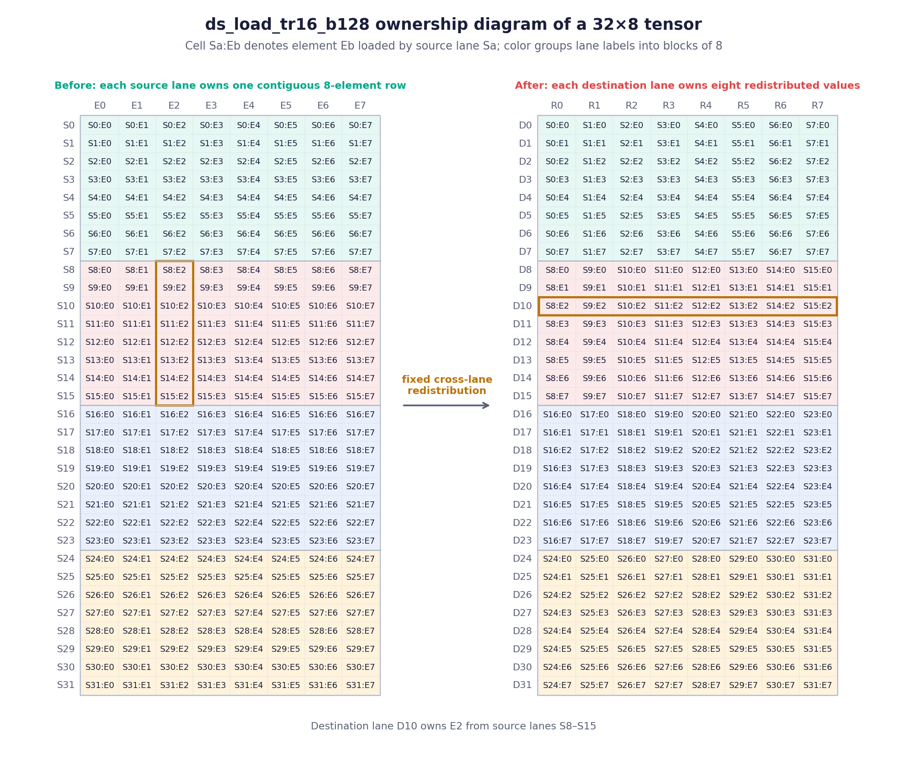
ds_load_tr16_b128 的 32x8 张量所有权示意图。左侧显示每个源 lane S 读取的八个元素；右侧显示在四次独立的 8x8 转置之后，每个目标 lane D 持有的八个值。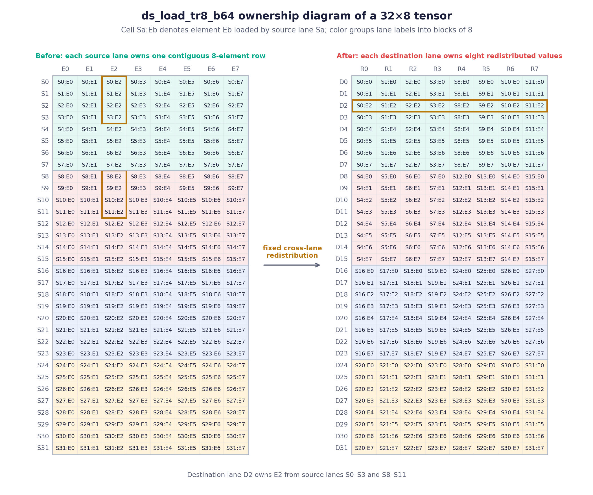
ds_load_tr8_b64 的 32x8 张量所有权示意图。与 ds_load_tr16_b128 使用的连续组不同，每个源组把两组各四 lane 的运行合并在一起。在每张映射图中，颜色把它的 S 或 D lane 标签分组成八块。该指令加载的数据按大小为 N x T 的 tile 进行转置，其中 N = 8 是每个 lane 读取的连续元素个数，T = 8 是一个组内的 lane 数。对于 ds_load_tr16_b128 和 ds_load_tr8_b64 两者，这都会形成一个 8 位/16 位元素的 8x8 tile，硬件对其转置，使目标 lane D_i 接收到列 E_i。
例如，在一个 8-lane 组内（S0…S7 指源 lane 0…7）：
- 目标 lane
D0接收列E0：[S0:E0, S1:E0, S2:E0, S3:E0, S4:E0, S5:E0, S6:E0, S7:E0]，即每个源 lane 加载的第一个 b16 元素。 - 目标 lane
D1接收列E1：[S0:E1, S1:E1, S2:E1, S3:E1, S4:E1, S5:E1, S6:E1, S7:E1]，即每个源 lane 加载的第二个 b16 元素。 - 目标 lane
D8接收下一个独立组的列E0：[S8:E0, S9:E0, S10:E0, S11:E0, S12:E0, S13:E0, S14:E0, S15:E0]。\n因为 N 等于组大小，组内每个 lane 都从该组的所有 8 个 lane 抽取数据。
ds_load_tr8_b64 变体使用了与 b16 版本不同的 lane 分布：每个源组合并两组各 4 个 lane 的运行。例如，目标 lane D0 到 D7 从源 lane S0 到 S3 以及 S8 到 S11 抽取数据。图 2a 和 2b 把这些每组 8x8 的 tile 组装成完整的 16 位和 8 位 WMMA B 操作数 tile。
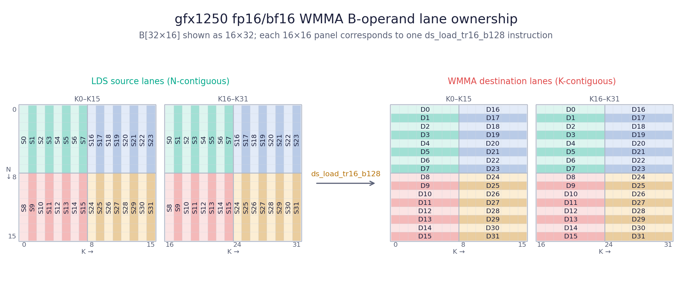
ds_load_tr16_b128 指令。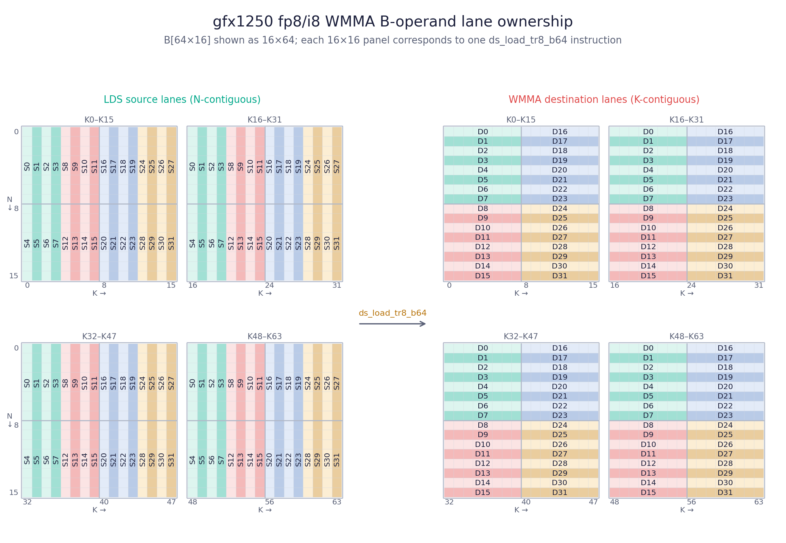
ds_load_tr8_b64 指令，每个源组被拆成两组各四 lane 的运行。上面的示例展示了当每个 lane 的 LDS 地址构成 WMMA 操作数的一个 8x8 切片时该指令的行为。这并非硬件限制：每个 lane 都可以从独立的 LDS 地址读取，只要它自己 64/128 位的读取是连续的，硬件就会应用同样固定的重分布，无论地址如何，也无论这些位代表什么。
由于重分布不依赖于地址之间的关系，因此“转置”只是对某一种特定地址模式的思维模型；该指令可以支持更一般的数据移动。适用性只取决于所请求的 (register, lane) -> offset 映射是否符合该指令固定不变的数据移动模式。将两者都表示为线性布局，使编译器能够直接测试这种匹配，而不是去检测一个高层级的转置操作。图 3 展示了这种灵活性：每个 lane 提供一个独立的 LDS 地址，而 ds_load_tr 对任何这些地址所选出的向量应用同样固定的跨 lane 重分布。
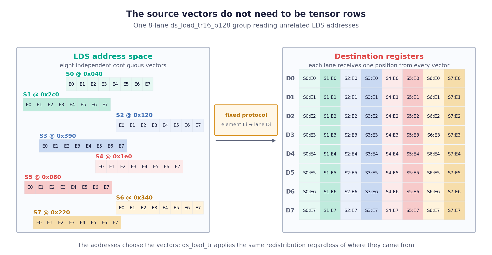
ds_load_tr 并不要求源地址描述几何 tile 的行。每个 lane 提供一个独立的 LDS 地址，而该指令对所选出的向量应用同样固定的跨 lane 重分布。从 LDS bank 冲突的角度看，ds_load_tr 的行为与常规的 ds_load 类似。硬件从各 lane 发出的 LDS 地址中选择 bank；跨 lane 的重分布随后发生。因此，bank 冲突应该使用源 LDS 布局来分析，而不是目标寄存器布局。
在 Triton 中把 local_load 降级为 ds_load_tr
Triton 将该降级实现于 MemoryOpToLLVM.cpp，作为从 TTGIR 到 LLVM IR 转换的一部分。该降级把共享与目标编码转换为线性布局，然后计算 cvt = dstLL.invertAndCompose(sharedLL)，它把每个目标硬件位置 (register, lane, warp) 映射到其源 LDS 偏移。
考虑一个玩具级（toy）的 tensor<32x8xbf16> 示例：单个 warp、M = 32、K = 8，且每个 lane 有 8 个元素：
#shared = #ttg.swizzled_shared<{vec = 1, perPhase = 1, maxPhase = 1, order = [0, 1]}>
#dst = #ttg.linear<{register = [[0, 1], [0, 2], [0, 4]],
lane = [[1, 0], [2, 0], [4, 0], [8, 0], [16, 0]],
warp = [], block = []}>
我们有，#shared 的 order = [0, 1] 使维度 0（M）成为 LDS 连续的维度，而 #dst 已经以线性布局的形式表达（这就是下文几段提到的“Identity”情形）。将它们组合起来：
dstLL sharedLL cvt = dstLL.invertAndCompose(sharedLL)
(register,lane) -> [M,K] offset -> [M,K] (register,lane) -> [offset]
------------------------- ----------------- --------------------------------
register=1 -> [ 0, 1] 1 -> [ 1, 0] register=1 -> [ 32]
register=2 -> [ 0, 2] 2 -> [ 2, 0] register=2 -> [ 64]
register=4 -> [ 0, 4] 4 -> [ 4, 0] register=4 -> [128]
lane=1 -> [ 1, 0] 8 -> [ 8, 0] lane=1 -> [ 1]
lane=2 -> [ 2, 0] 16 -> [16, 0] lane=2 -> [ 2]
lane=4 -> [ 4, 0] 32 -> [ 0, 1] lane=4 -> [ 4]
lane=8 -> [ 8, 0] 64 -> [ 0, 2] lane=8 -> [ 8]
lane=16 -> [16, 0] 128 -> [ 0, 4] lane=16 -> [ 16]
invertAndCompose 构建 cvt 的方式是：取每个 dstLL 目标 [M,K]，将其与 sharedLL 的每个目标匹配，然后读取该基的偏移——例如，dstLL 有 register=4 -> [0,4]，它匹配 sharedLL 的 128 -> [0,4]，因此 cvt 将具有 register=4 -> [128]。sharedLL 必须对 [M,K] 是满射的（surjective），这个查找才能始终成功。
该指令以其所操作的最小布局因子来建模，因此我们可以避免编写针对特定形状做模式匹配的特制代码，例如“这个目标布局看起来像是共享内存的转置”。这是因为一条指令是由它如何在硬件上移动数据来定义的，而不是由从 (register, lane, warp, block) 到张量坐标的映射来定义的。\n一个 tile 是该指令所需的连续因子，而目标布局 cvt 只有在 divideLeft(cvt, tile) 有结果时才能使用该指令。该商描述在提取出 tile 之后剩余的结构；fullTile 为一条完整指令提供剩余的 lane 与寄存器映射。
该降级用两个相关的布局来建模 ds_load_tr16_b128：
tile = identity1D(8, lane, offset)描述指令选择所需的连续部分。对于一个固定的目标寄存器，目标 lane 0 到 7 请求 8 个连续的 LDS 偏移。fullTile把tile扩展到参与一条指令的所有 lane 和寄存器上。它的offset维度标识连续基tile内的一个元素，而它的addr维度标识哪个 lane 的 LDS 读取提供该元素。剩余 lane 与寄存器基被赋予addr的顺序，编码了该指令的数据交换模式。这两条指令使用相同的基tile，但在整条指令上的分配方式不同。图 4a 和 4b 采样了每种变体的一个所有权面板，展示这些基如何从(lane, register)映射到(offset, addr)。
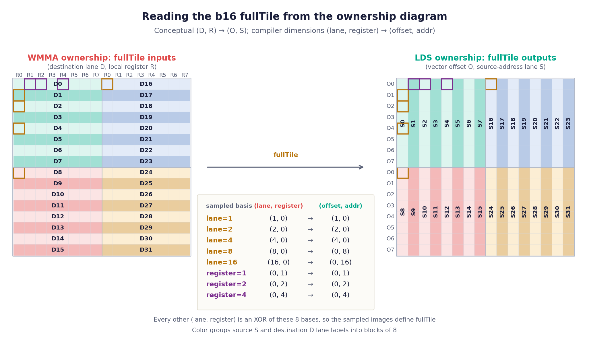
ds_load_tr16_b128 所有权面板解读 b16 的 fullTile。每个逻辑元素把一个目标 (D, R) 与其源 (O, S) 配对，对应编译器维度 (lane, register) 和 (offset, addr)。采样五个 lane 基和三个寄存器基就足以定义该布局，因为每个其他位置都是这些基的 XOR。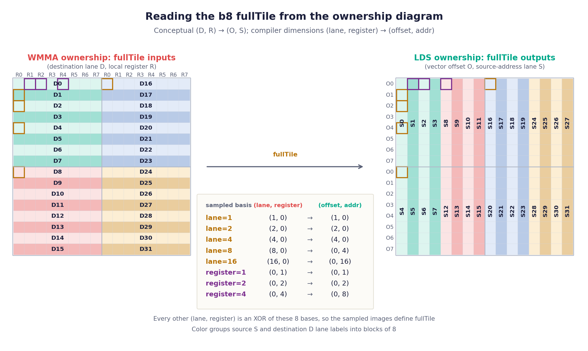
ds_load_tr8_b64 所有权面板做同样的采样。lane 与寄存器基以不同的顺序被赋予 addr，因此八个映射中只有两个发生变化：lane=8 现在选择源 lane S4 而非 S8，而 register=4 选择源 lane S8 而非 S4。这正是把每个组拆成两组各四个源 lane 运行的原因，在源面板中可见为颜色在每个八寄存器区域的中间发生改变。接下来主要有两个降级步骤：
- 适用性检查：构建从目标硬件位置到 LDS 偏移的访问映射，然后检查它是否包含该指令所需的数据移动模式。
- 指令发射：从访问映射中提取出该模式，推导每个运行时 lane 和 warp 读取的 LDS 地址，并为每个剩余的重复发出一跳指令。
这些是对 layout 映射（而非特指线性 layout）所做的操作。Triton 用线性 layout 表示这些映射，并通过复合（composition）、求逆（inversion）和除法（division）来执行这些操作。图 5 可视化了在 cvt 基映射上的资格检查，而图 6 则跟踪了用于推导运行时 LDS 地址的映射序列。
编译器首先检查 divideLeft(cvt, tile)。为了让 lower 化（lowering）生效，cvt layout 必须能被 tile 整除。下图把这一检查应用到一个最小的单-warp tensor<32x8xbf16> 示例上。它对应了 Triton 在 test/Conversion/amd/ds_transpose_gfx1250.mlir 的 ds_transpose_ll 回归测试中有效（valid）、乱序有效（scrambled-valid）和无效（invalid）三种情形。
![Three cvt basis tables side by side for a tensor<32x8xbf16> local_load on one warp, each listing register bases before lane bases and mapping (register, lane) to a scalar LDS offset. The Identity table shows lane=1,2,4 mapping to [1], [2], [4] in green. The Complex table keeps those same three lane-to-offset targets green but swaps register=4 and lane=8's targets ([8] and [128]), and still ends in "1x ds_load_tr16_b128". The third table swaps lane=2 and lane=4's targets to [4] and [2], highlighted red, ending in "8x ds_load_u16".](fig09.png)
ds_load_tr16_b128 的资格条件约束了 cvt 的前 3 个 lane 基 — 该 (register, lane) -> [offset] 映射由目标 layout 与共享 layout 的逆复合而得。这些基必须匹配基础 tile（lane=1,2,4 -> [1],[2],[4]），而其余每个基都必须映射为 8 的倍数。重复（repetition）基可以重排（中间）；交换两个必需的 lane 基（右图）会使 divideLeft 无结果，该 load 便回退为标量。若 divideLeft 成功，其商（quotient）描述了 tile 的重复在 cvt 中如何排布，但那是在一个已把 tile 本身分解出去的约简坐标系中。lowering 计算 reps = zerosLike(tile) * quotient 以将其抬升回 cvt 的完整 offset 空间。这会将该 tile 的 lane 基置零，因此 reps 会把每个目标寄存器/lane/warp 位置映射到其 tile 的 LDS 基础 offset，而非映射到该 tile 内部的位置。
lowering 随后计算 addrToOffset = fullTile.invert().compose(reps)。fullTile.invert() 把单条指令内的一个位置 (offset, addr) 映射到接收它的目标寄存器和 lane；与 reps 复合后，该目标位置被映射到其 LDS tile 基。这里 addr 枚举了单条指令的 lane 所发出的各个独立源读取。因此编译器把 addrToOffset 的 addr 基重命名为 addrLayout 的 lane 基，并加上来自 reps 的 warp 基。用运行时 lane 和 warp ID 求值 addrLayout，即得到每个 lane 必须读取的 LDS 地址。
![A five-stage pipeline showing how layout domains and codomains change during ds_load_tr lowering. cvt maps register[128], lane[32], and warp[4] to offset[8192]. divideLeft produces a quotient mapping register[128], lane[4], and warp[4] to offset[1024]. zerosLike(tile) times the quotient produces reps, restoring lane[32] and offset[8192] with the tile lane bases set to zero. Composing reps with fullTile inverse produces addrToOffset, which maps tile offset[8] and addr[32] to offset[8192]. Renaming addr to lane and adding the warp bases produces addrLayout, mapping runtime lane[32] and warp[4] to offset[8192]. A branch shows fullTile inverse mapping offset[8] and addr[32] to register[8], lane[32], and warp[1].](fig10.png)
divideLeft 成功之后使用的 layout 流水线。商移除了基础 tile，reps 把它的排布抬升回原始 offset 空间，fullTile.invert() 则经由 reps 转换指令的 (offset, addr) 坐标。最终的 addrLayout 把运行时 lane 和 warp ID 直接映射到每个 lane 发出的 LDS 地址。关键要点（Key Takeaways）
- 转置 LDS load 消除了连续度（contiguity）不匹配带来的开销。当 WMMA 操作数以与寄存器 layout 所需连续度不同的方式存放在 LDS 中时，普通的
local_load会退化为大量窄ds_load指令。ds_load_tr则让每个 lane 发出一次宽的读取，并由硬件把数据重新分发到目标 layout 中，从而削减了指令数量和寄存器压力。 ds_load_tr的资格条件是一个 layout 匹配问题，而非 transpose 检测。由于该指令应用的是固定的跨-lane 模式，编译器把两个 layout 都表示为线性 layout，并用左除（left division，divideLeft）来测试所需的(register, lane) -> offset映射是否能分解进该指令的固定 tile。若能，则该 load 便合格。
第二部分 — 分区冲突（Partition Conflicts）
转置 load 优化的是单个 warp 从 LDS 的读取。分区冲突关心的则是多个 warp 同时读取 LDS 时会发生什么。\n每个 Workgroup Processor（WGP）
[2] on MI450 contains four SIMD (vector) units, organized into two physical pairs. Pair A holds SIMD 0 and SIMD 2; Pair B holds SIMD 1 and SIMD 3. Warps are dispatched round-robin – warpN runs on SIMD N mod 4 – so even-numbered warps always land on Pair A and odd-numbered warps on Pair B.
WGP 还拥有六个 64 KiB 的硬件内存分区。这种划分在硬件上固定：其中五个属于 LDS，提供其 320 KiB 容量，第六个则支撑 L0 向量缓存。这些分区是本文剩余部分讨论的争用单元。
每个 SIMD pair 把它的 LDS 请求发送给共享的 LDS/L0 仲裁器，该仲裁器拥有 L 和 C 两个端口，各以 256 B/cycle 运行，且每个端口都能到达每个分区。当仲裁器能把两个到达的请求分配到不同端口时，它们在同一个 cycle 内访问 LDS，合计 512 B/cycle；否则它们串行化，有效带宽减半为 256 B/cycle。图 7 展示了这条数据通路：两个 SIMD pair 都汇入共享仲裁器，而其两个端口能到达全部六个硬件分区。
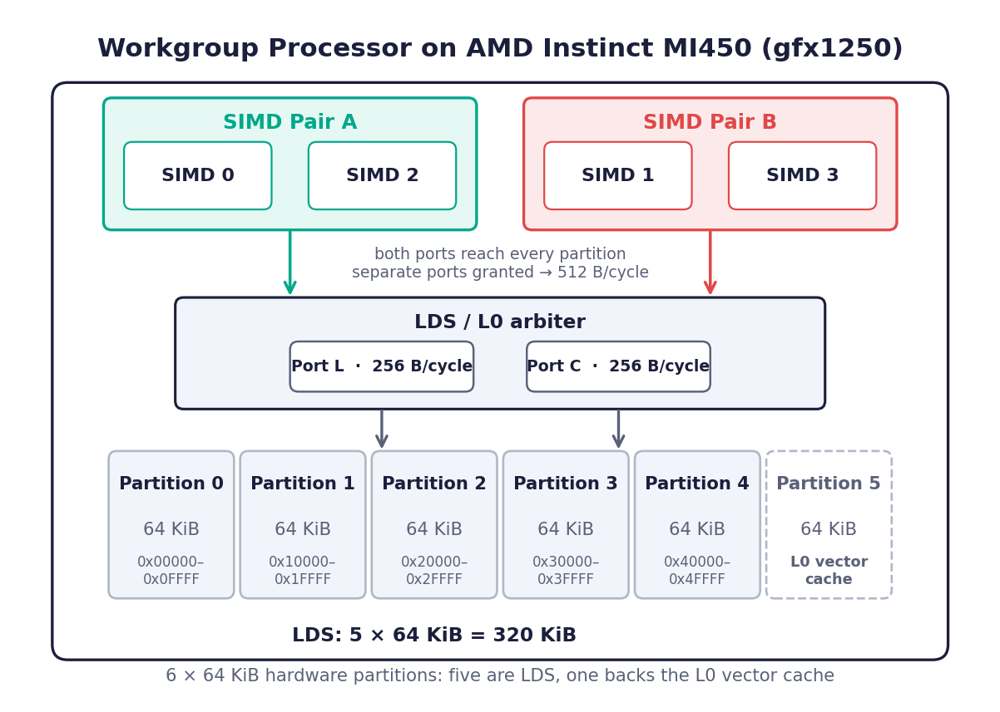
分区冲突规则（The Partition-Conflict Rule）
当来自不同 SIMD pair 的 warp 在同一 cycle 内对同一物理 LDS 分区发出 LDS 访问时，就发生分区冲突。
必须同时满足两个条件：
- 位置（Location）— 两次访问都指向同一分区。
- 时间（Time）— 两次访问都在同一 cycle 内发出。
只有跨-pair 的访问能同时满足这两个条件，因为单个 pair 每个 cycle 最多只能向仲裁器呈送一个 LDS 请求。当两次此类访问在分区和 cycle 上确实重合时，仲裁器会让它们串行化，LDS 带宽随之减半。\n因此打破任一条件即可避免冲突。Triton 和 Gluon 无法控制 warp 在哪一个 cycle 上发出访问，所以位置是我们能着手处理的条件。
分离位置，正是本文其余部分逐步构建的内容：
- 为什么标准的 WMMA layout 在操作数 A 上会发生冲突。
- 如何把 CTA layout 写成线性 layout，从而把两个 pair 通过 swizzle 分开。
- 为什么单靠 swizzle 还不足够，以及
PartitionedSharedLayout会补充什么。 - ctaLayout 的选择如何同时决定了把操作数存入 LDS 的 TDM 开销。
- 分区感知的分配器（partition-aware allocator）如何让这种分离变成物理上的实绩。
- 由此产生的局部 load 如何几乎以零运行时开销被 lower 化。
- 用一个只读 LDS 的 kernel 来测量，这种分离究竟能带来多少收益。
注意
由于时间（time）是其中一个条件，分区冲突并不像 bank conflict 那样是一个确定性的量。warp 内的线程以锁步方式执行，所以 bank conflict 是可计数的。然而不同的 warp 会彼此漂移，因此我们把四个 warp 建模为仿佛在同一 cycle 上发出同一条指令。在该假设下，分离位置能彻底消除冲突；在现实中，它只是把冲突概率压低，而非严格降到零。
为什么标准的 WMMA layout 会发生冲突
考虑一个使用标准 WMMA CTA layout 的 4-warp GEMM，它在 Gluon 中最初用 warpsPerCTA = [2, 2] 表示。warpsPerCTA 是描述 warp 如何在输出 tile 上排布的一种定制简写 — 也就是 Gluon 现在也能以 WMMA ctaLayout 这种通用形式表达的同一映射，我们稍后会讲到它。它把四个 warp 以 2x2 网格排列在 tile 上，如图 8 所示：
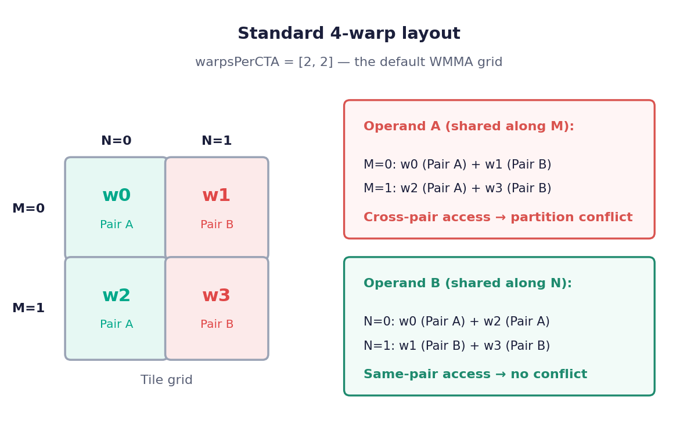
warpsPerCTA = [2, 2] layout 下，每个 M-行都被一个 Pair A warp 和一个 Pair B warp 共享。位于 tile (m, n) 的每个 warp 读取其 M-位置对应的 A 行，以及其 N-位置对应的 B 列。这里的 “M-行”并不是单个矩阵行，而是单个 warp 用一条 WMMA 指令所覆盖的 M 行带。同一 M-行内的 warp 读取相同的 A 数据。在此 layout 中，w0（Pair A）和 w1（Pair B）共享 M-行 0，w2（Pair A）和 w3（Pair B）共享 M-行 1。
由于两个 pair 读取相同的字节，这些字节必然位于同一个分区中，而相同的数据无法被分散到多个分区。因此这个 layout 在 A 上锁定了位置条件：两个 pair 被保证共处一地，只有它们的相对时序决定了某个具体访问对是否真的发生碰撞。这正是应当避免的情形，因为它让我们无从掌控。这里操作数 B 没有问题：共享同一 N-列（w0+w2、w1+w3）的 warp 属于同一个 pair。
把 CTA layout 写成线性 layout
回顾一下
linear layout refresher that a layout maps hardware inputs to tensor coordinates by assigning each input basis an[M, N] offset and composing them with XOR. The ctaLayout is the slice of this description that places warps over the output tile: its warp bases assign each warp its tile, and its reg bases enumerate the repetitions when a single warp covers several tiles.
定制化的 warpsPerCTA = [2, 2] 变成了下面的 ctaLayout：
ctaLayout = {
warp = [[0, 1], [1, 0]],
}
我们只指定 warp 基：它们已经覆盖了输出 tile（该 layout 是满射的），所以 Triton 会在流水线靠后的阶段自动补上 reg 重复。读起来是：warp = 1 映射到 [0, 1]，warp = 2 映射到 [1, 0]，因此 w3（它分解为 warp = 1 XOR warp = 2）落在 [0, 1] XOR [1, 0] = [1, 1] 上。
swizzle 后的 layout 保留同样的四个 warp，但把 warp = 1 改为沿 M 移动：
ctaLayout = {
reg = [[2, 0]],
warp = [[2, 1], [1, 0]],
}
warp = 1 现在映射到 [2, 1] 而不是 [0, 1]。经过这一改动，仅凭 warp 基已不再够覆盖整个 tile，所以我们要加入一个显式的 reg = [[2, 0]] 基以恢复满射性。该 reg 基就是重复：w1 在其第二次迭代时结合了 warp = 1 和 reg = 1，落在 [2, 1] XOR [2, 0] = [0, 1] 上。
上面这两个 ctaLayout 只在一个地方有差别：输入基 warp = 1，它决定了来自不同 pair 的 warp 是否会读取相同的 M-行。在标准 layout 中它映射到 [0, 1] — 一个纯粹的 N 方向移动 — 这正是跨-pair warp 会落在同一 M-行并读取相同 A 字节的原因。swizzle 把它改成 [2, 1]，其非零的 M 分量把那些跨-pair warp 推到不同的 M-行上，因此它们读取不同的 A 数据。图 9 展示了由此得到的 layout，两个 pair 位于互不相交的 M-行上。
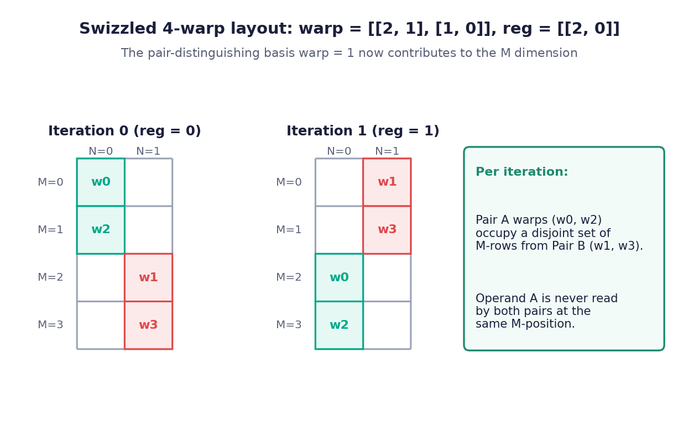
选择 ctaLayout 以减少 TDM 流量
piece 的数量不只是记账性质的 — 它决定了操作数如何从全局内存加载。在 MI450 上，张量数据移动引擎（TDM）把张量拷贝进 LDS，而每条 TDM 指令每个 warp 至多移动一个 piece — 这是一个与 warp 所能写出的 stride 模式相关的硬件约束。因此指令数量直接由 piece 数量决定：
TDM 指令数 = ⌈ piece 数量/warp 数量 ⌉
当有四个 warp 时：
- 操作数 A：4 个 piece，4 个 warp -> 一条 TDM 指令即可覆盖所有 piece。
- 操作数 B：8 片、4 个 warp → 需要两条 TDM 指令。
片的数量——因而 TDM 的开销——是你所选的 WMMA ctaLayout 的一种结果。上面的布局给每个 warp 分配单个 16x16 tile，这使得片很小：操作数 B 最终成为八条 [K, 16] 带状条。如果换个更粗糙的 ctaLayout，让每个 warp 覆盖一条由四个 tile 组成的 partition_dim 带状条，片就会变大、数量变少。图 11 展示了这一替代方案：warps = {[2, 4], [1, 0]} 给出一个 64x128 tile，它把 C 切分成 2x1 块（沿 M 堆叠）。
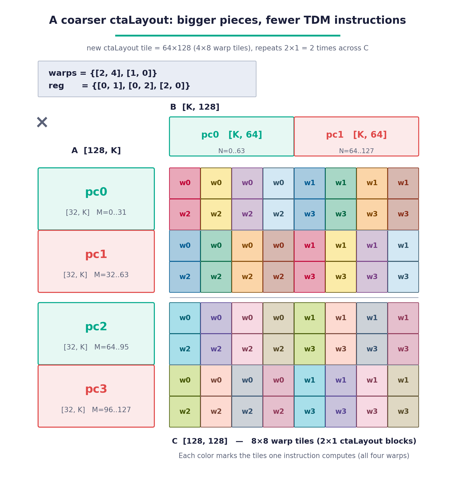
[32, K] 片、num_partitions = 2），但操作数 B 从八块 [K, 16] 片坍缩为两块 [K, 64] 片（num_groups = 1）。这个选择会带来两点结果。第一，TDM 开销下降：在四个 warp 的情况下，操作数 B 的两块片现在能装进单条 TDM 指令，而此前需要两条。第二，更大的片能更好地利用内存系统——B 是 N 连续的，在 fp16 中一条 128 字节的 cache line 能容纳 64 个 N 元素，所以一块 [K, 64] 片恰好是一条 cache line，而旧的 [K, 16] 片只填满了它四分之一。各对之间的分离没有改变；我们只是用更少的、利用得更充分的传输换取了片粒度的增大，因此 WMMA ctaLayout 和 PartitionedSharedLayout 参数必须一起选择。
从更粗糙的 tile 读出新参数，操作数 A 不变，但操作数 B 现在只有一个 group（它的两片构成一个 (P0, P1) 周期）：
a_shared = PartitionedSharedLayout(
num_partitions=2,
num_groups=2,
partition_dim=0, # slice A along M
partition_layout=a_inner_layout,
)
b_shared = PartitionedSharedLayout(
num_partitions=2,
num_groups=1, # was 4: B is now two [K, 64] pieces
partition_dim=1, # slice B along N
partition_layout=b_inner_layout,
)
分区保证是如何执行的：分区感知的分配（Partition-Aware Allocation）
线性布局决定一片属于哪个分区；而让这些分区落在 LDS 的不同物理 64 KiB 区域的，是分配器。Triton 的共享内存分配器是一种贪心区间放置算法，出自经典论文
“Algorithms for Compile-Time Memory Optimization”, and the partitioned case is a small extension of it (Allocation.cpp).基础算法把每个缓冲区视为（时间 × 偏移）空间中的一个矩形——沿时间是它的生存期范围，沿偏移是它的大小——并贪心地把每个缓冲区放到不与任何同时存活的其它缓冲区重叠的最低偏移处。针对分区张量的扩展增加了两个要素。
第一，当一个 local_alloc 使用一个 PartitionedSharedEncoding 时，分配器创建 num_partitions 个缓冲区（每个都持有该分区的全部 group 拼接结果，因此大小为 pieceSize x num_groups），并把它们全部标记为相互的邻居。邻居必须占据不同的物理分区。
第二，放置分两个阶段进行分区感知处理：
- 第一阶段（初始放置）。在基础算法中，这一步从最低偏移开始向上扫描空闲槽；在每个槽，选择第一个生存期合适且未被占用的候选，给它该偏移，并把剩余空间拆分为新槽。 分区感知在此选择上增加了一道闸门：只有当候选落在与其已放置的邻居不同的物理分区时，它才被接受。这会使当前槽被阻塞——每个在此处合适的候选都会与某个邻居的分区冲突。发生这种情况时，分配器会在更高偏移处、越过邻居的分区重新打开该槽，于是候选在那里变得可接受。由于偏移只会向上移动，算法持续推进。图 12 追踪了这种第一阶段放置的四次迭代，不断抬高搜索高度，直到每个分区缓冲区都找到一块与邻居无冲突的分区。
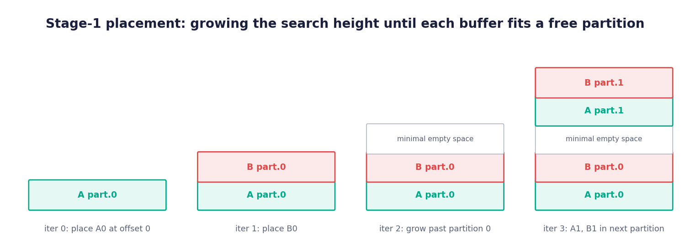
- 第二阶段（干扰细化）。在基础算法中，初始偏移仍可能让某些缓冲区重叠，因此这一步构建一张干扰图——任意两块同时存活且字节范围重叠的缓冲区之间连一条边——对其进行着色，并把每个缓冲区推高到所有与之干扰的缓冲区之上，反复进行，直到没有重叠。 分区也需要这一步，因为本阶段执行的偏移抬高本身可能把一个缓冲区滑进与某邻居相同的物理分区，从而破坏第一阶段确立的结果。因此分区感知再增加一种干扰边：共享同一物理分区的两个邻居。当这条边被消解时，缓冲区不是仅仅越过邻居的字节，而是越过邻居的分区，从而恢复此保证。
分区本地加载是如何下调（Lowering）的
ctaLayout 和分配器在编译期解决一切问题；最后一个问题是加载本身必须在运行时计算什么。每个操作数都带有一个分布式布局（把线程的 (register, lane, warp) 映射到张量坐标）和一个共享布局（把 LDS 位置映射到同样的坐标）。后端发出它们的复合，即 cvt: (register, lane, warp) -> offset。分区共享布局只是额外增加一个输出维度，因此转换得到的是一对各 (offset, partition)——从哪个物理缓冲区读取，以及在其中的何处。图 13 展示了 64x64 分区操作数 A 的这一复合过程，高亮的是供给新 partition 坐标的那些基。
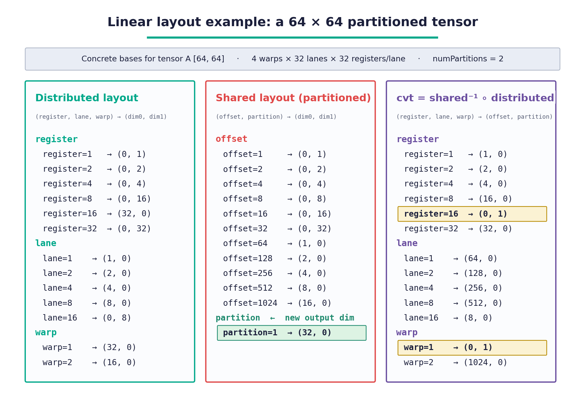
partition 输出维度。把它与分布式布局复合得到 cvt: (register, lane, warp) -> (offset, partition)；高亮出来的基正是供给新 partition 坐标的那些。和每个线性布局的输出一样，分区索引是各个基贡献的 XOR，每一项都能廉价地解析：register 项是编译期常量，warp 项是运行时值但保持循环不变量，而 lane 通常根本不馈送给 partition。因此基指针的选择可以完全移出循环。后端一次性解析出与 warp 相关的部分，并预先计算一个小型的、按分区重排后的基指针数组，每次加载都用会在编译期折叠为字面量的常量来索引它。
这正是不做分区时后端也会做的事情：把单次动态地址计算提到循环之前，使循环体完全保持静态。分区只是在它旁边多加了基指针数组，因此运行时的开销是一次性的初始化，其规模与分区数成正比，而非与加载次数成正比；K 循环内部的地址运算仍与基线一样是纯 XOR 表达式。
测量它：一个 LDS 带宽微基准（Microbenchmark）
以上所有内容都是编译期的构造。为了测量它带来多少收益，我们把它隔离开，放到一个仅改变共享布局的微基准中——同样的形状、同样的指令数、同样的向量宽度、同样的 bank 行为。
加载什么。该 kernel 从 LDS 中读取一个 [NUM_WARPS, N] fp16 张量，此外不做任何事。按 [4, 256] 缩小尺寸后，使得这些基能放在一页纸上，其布局为：
distributed (blocked) shared, plain shared, partitioned
(reg, lane, warp) -> (d0, d1) offset -> (d0, d1) (offset, partition) -> (d0, d1)
reg = 1 -> (0, 1) offset = 1 -> (0, 1) offset = 1 -> (0, 1)
reg = 2 -> (0, 2) offset = 2 -> (0, 2) offset = 2 -> (0, 2)
reg = 4 -> (0, 4) ... ...
lane = 1 -> (0, 8) offset = 128 -> (0, 128) offset = 128 -> (0, 128)
lane = 2 -> (0, 16) offset = 256 -> (1, 0) offset = 256 -> (2, 0)
lane = 4 -> (0, 32) offset = 512 -> (2, 0) partition = 1 -> (1, 0)
lane = 8 -> (0, 64)
lane = 16 -> (0, 128)
warp = 1 -> (1, 0)
warp = 2 -> (2, 0)
该 kernel 的四个属性直接来自这些基：
- 每个 warp 一行。分布式布局的 warp 基只携带 dim 0 而没有别的，因此 warp
w完整地拥有行w，且不触及任何其它行。 - 每次加载一个 512 字节窗口。寄存器和 lane 基各自沿着 dim 1 以 8 个 fp16 连续覆盖，即每个 lane 128 位，因此一个 warp 用单条
ds_load_b128跨越 512 字节。被测场景使用长得多的行，这只会添加沿着 dim 1 步进的寄存器基，随之而来的还有被计时的背靠背加载。 - 无论哪种布局都没有 bank 冲突。同样的连续性意味着各 lane 读取连续的 16 字节块，而
ds_load_b128以 16 个 lane 一组为 warp 提供服务，因此每组恰好把全部 64 个 bank 各覆盖一次。 - 两种共享布局只在一处不同：一行最终落在哪个分区。在普通布局中，四行放在一个连续的缓冲区里，因此它们都共享单个分区。在分区布局中，这些行交替于两个分区之间。Warp
w拥有行w，因此这正是把它放到分区w % 2上的原因。
张量的大小经过精挑细选，使未分区的基线能放进单个 64 KiB 分区之内，这正是确保一定存在待解决的冲突的场景。编译后的 LDS 大小就是放置确实发生的证据。对于 64 KiB 的张量，基线在偏移 0 处分配一个 64 KiB 缓冲区，而分区版本分配两个 32 KiB 缓冲区，并被强制把第二个推到 64 KiB 边界处，总共 96 KiB。
带宽如何计算。每个 warp 发起一连串背靠背的 ds_load_b128，两侧夹着两次对 s_get_shader_cycles_u64（着色器时钟周期计数器）的读取。开头的时钟读取之前有一道 barrier，把各 warp 对齐起来，使它们的运行重叠；最后一条加载之后又有一道 barrier，确保每条加载都在收尾的时钟读取之前完成。所有 warp 合计恰好把张量读取一遍，因此带宽就是它按字节计的大小除以记录到的周期数。
稳态带宽。该数字除去了时钟统计到的一切，包括固定的启动与排空开销——两次时钟读取和 barrier，外加首个访问的一次不重叠的 LDS 往返。这一开销不随突发长度增长，所以它会低估带宽，而且 kernel 流式传输越快低估越严重，因为固定开销在更短的运行中占比更大。把一次突发建模为
cycles = fixed + bytes/rate
并在一定范围的突发长度内以字节为横轴拟合周期数，可以通过斜率的倒数恢复出速率，而固定开销则体现为截距。
结果。在四个 warp、64 KiB 工作集、每个 warp 32 次加载的条件下：
| 布局 | 实测周期（measured cycles） | LDS | 原始 B/cycle | 稳态 B/cycle | 峰值 B/cycle |
|---|---|---|---|---|---|
| 普通 | 323 |
64 KiB | 202.9 |
255.4 |
256 |
| 分区式 | 196 |
96 KiB | 334.4 |
509.8 |
512 |
消解分区冲突，以 32 KiB 额外 LDS 的代价换来 1.65x 的加速，而且两种布局都几乎以各自上限的 100% 吞吐进行流式传输——基线因冲突被限制在单一端口上，分区布局则两条端口都用上了。
这锁定的是机制及其上限：一次分区冲突会损失第二个 LDS 端口，而把各片分开，用一个对齐空隙的代价就能完整地取回它。一个除了读 LDS 什么都不做的 kernel 当然是最理想的情形。真实的 GEMM 会把这些加载与 WMMA 数学运算和全局流量重叠在一起，因此串行化的一部分被隐藏在其它工作背后，而额外的 LDS 又与占用率（occupancy）相竞争。
关键要点
- 分区冲突需要同时具备共享的位置和共享的周期。与把单个访问内的线程串行化的 bank 冲突不同，分区冲突要求跨对的访问命中同一个物理 64 KiB LDS 分区，并且同时被发出。打破任一条件即可，而由于 Triton 和 Gluon 无法调度发出时刻，它们攻击的是位置这一半。
- 解决办法是给
ctaLayout加 swizzle，并用PartitionedSharedLayout固定（pin）各片。分布式布局决定片的形状和num_partitions/num_groups，而partition输出维度让分区感知分配器能把相互冲突的片放到不同的物理区域——因此这种分离是编译器推理出来的结果，而非手工调出来的。 - 分区分离在运行时几乎免费。由于分区索引是编译期常量寄存器与一个循环不变量 warp 项的纯 GF(2) 线性 XOR，基指针的选择能完整地移出循环。
总结
在这篇博客中，你深入探究了两种静默限制 AMD Instinct™ MI450 GPU 上 kernel 吞吐的 LDS 效应，并看到了 Triton 与 Gluon 如何分别将其消除。在第一部分，你探索了转置的 LDS 加载，其中 ds_load_tr 协作转置指令让每个 lane 发出一次宽读取，同时硬件把数据重新分布到矩阵核所期望的布局中；编译器并不是靠匹配转置模式，而是把两侧都表达为线性布局并测试左除来判断资格。在第二部分，你梳理了分区冲突：为什么命中同一物理 LDS 分区的跨对 warp 会串行化，如何通过对 WMMA ctaLayout 加 swizzle、并用 PartitionedSharedLayout 固定各片来把两个 SIMD 对拉开，以及分区感知分配器连同循环不变量基指针选择如何以几乎为零的运行时开销让这种分离落到实处。一个只读取 LDS 的微基准为收益给出了量化数字：一旦冲突被消解，可获得 1.65x 的 LDS 带宽增益。
LDS 只是从全局内存通往矩阵核之路上的其中一站，而布局驱动的优化是面向 AMD GPU 的 Triton 与 Gluon 编译器中的一个活跃领域。我们计划继续推出更多 gfx1250 kernel 优化的深度分析。
附加资源
- Linear Layouts: Robust Code Generation of Efficient Tensor Computation Using GF(2)（arXiv:2505.23819）——Triton 线性布局背后的理论。
- Triton Linear Layout: Concept（雷超（Lei Zhang）著）——对线性布局的直观介绍。
- Triton Linear Layout: Examples（雷超（Lei Zhang）著）——线性布局内部机制与运算（乘积、复合、求逆、
invertAndCompose、左除）的实操示例。 - Algorithms for Compile-Time Memory Optimization——Triton 所实现的共享内存分配基础算法。
- Triton language 代码仓库——AMD 后端下调（MemoryOpToLLVM.cpp）、共享本地加载与存储下调（Utility.cpp）、分配器（Allocation.cpp），以及线性布局转换（LinearLayoutConversions.cpp）。
- From Naive to Near-Peak: Building High-Performance GEMM Kernels with Gluon——编写面向 AMD GPU 的 Gluon GEMM kernel 的先修资料。
免责声明
本文档所提供的信息仅供参考，可能包含技术上的不准确之处、疏漏和笔误。本文含信息随时可能变更，并可能因诸多原因而变得不准确，包括但不限于产品与路线图的变更、组件与主板版本的变更、新型号及/或新产品的发布、不同制造商产品之间的差异、软件变更、BIOS 刷写、固件升级等。任何计算机系统都存在无法完全防止或缓解的安全漏洞风险。AMD 不承担更新、更正或修订此信息的义务。但 AMD 保留修订此信息并随时更改其内容的权利，且无义务将此等修订或更改通知任何人。此信息按“原样”提供。AMD 对此处内容的准确性不作任何陈述或保证，也不对可能出现在此信息中的任何不准确、错误或疏漏承担责任。AMD 明确否决不侵权、适销性或任何特定用途适用性的任何默示保证。在任何情况下，AMD 均不对任何人因使用此处所含任何信息而产生或与之相关的任何依赖损失、直接损失、间接损失、特殊损失或其他后果性损害赔偿承担责任，即使 AMD 已被明确告知此类损害发生的可能性。AMD、AMD 箭头标志及其组合均为 Advanced Micro Devices, Inc. 的商标。本出版物中使用的其它产品名称仅为识别用途，可能是其各自公司的商标。© 2026 Advanced Micro Devices, Inc. 保留所有权利。